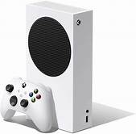

About
My name is Narayan Mitra. I really like to play games! I also do Hindi school and learn about abacus! I have also been making coding projects with the help of a teacher!

Hobby: playing
I like playing because I love to be a gamer when I grow up and become a teenager. I have also been trying to be great at playing and become a master at Video Games! It takes a lot of time to be a cool gamer. First, you have to first try the game you want to play and then play it. You can'
t just smack-dab just not like it then play it over and over again. For example: Once I played this game my friend asked me to play, and then I got scared of it. But then once I was able to survive the horor in it, I continued playing it. See, what you have to do is try leave out the scary parts or the parts which you don't like. For example: the jumpscares in the game I was scared of. When you get killed they give out a really, really scary jumpscare, so what I basicly do is mute the audio from the jumpscares. So, if the music sounds scary or bad, then mute the audio of the device you are playing! If the GAME is bad or scary, then don't play it. Just play another game which you would prefer. Play something which you enjoy, have fun in, or which makes you laugh! 😃😁😄
Gaming Reason.
Why I wanted to be a gamer is because I love to play and it makes me feel happy to play, and I have lots of fun playing! I really like hangin out with friends! When I wanna become a gamer, I first wanna become a youtuber so that everyone can see my gaming. It would be fun to go play with friends on youtube. But first PICK a game. Don't let your friends pick the game. It's your choice.
Inspiration
I was inspired by youtubers posting their youtube videos on gaming, so I decided that I wanted to be a gamer. I'd really want people subscribe to me while I play and then become a famous youtuber! It's my DREAM to become aa youtuber. So, I'm going to try to make cool videos first, then onto the gaming!